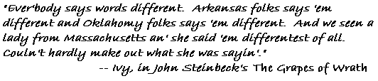

|
|
|
alt-usage-english.org |
| Home |
| Newsgroup |
| Intro Documents A B C D E F G |
| FAQ |
| FAQ Supplement |
| ASCII IPA |
| Audio Archive |
| Links |
| UCLE Corner |
| What's New? |
| Search |
| Site Map Where am I? |
| Contact |
|
|
|
IMPORTANT NOTICE: This site is scheduled for closure in September 2016.
If you have any comments about the closure, please post them to the newsgroup. See this page for information about the newsgroup and how to post to it. The alt.usage.english Home Page |
|
This is the web site of the
alt.usage.english newsgroup Here you'll find:Information about newsgroups in general and alt.usage.english in particular: our logo, our people, more, in About the alt.usage.english newsgroup. FAQs: We've got lots of them!
Pronunciation is a big topic in alt.usage.english, but in newsgroups we can't use those fancy characters you see in dictionaries. We make do with ordinary characters. So if you want to know how to say /'fA:D@/, consult the ASCII IPA pages. Listen to the sounds of English from across the USA and around the world in the Audio Archive. It's amazing how many different ways there are to say the same words. The Links page has hundreds of categorised links to English usage and other interesting web sites. Another English usage site, that of the uk.culture.language.english newsgroup, is hosted here. The newsgroup is alive and well, but their Web site is no longer active, and is frozen in time at UCLE Corner. If you're a regular visitor, you might like to look at What's New? to find out about recent changes and additions to the site – also convenient links to new features that you might have seen announced in the newsgroup. In What's New you'll also find links to archive copies of this site going back to August 2000. If you know what you're looking for but not where to find it, try the English Usage Site Search facility, which searches this site and other English usage sites in one operation. Read about these and other search methods on the Search Suggestions page. The Site Map is a hierarchical list of all the pages in this site, allowing you to explore the site structure, or to search for a page using a part of its title. Click on the Where am I? link to find the page you're looking at in the map. Questions or comments about this site are always welcome. Contact the webmaster.  |
|